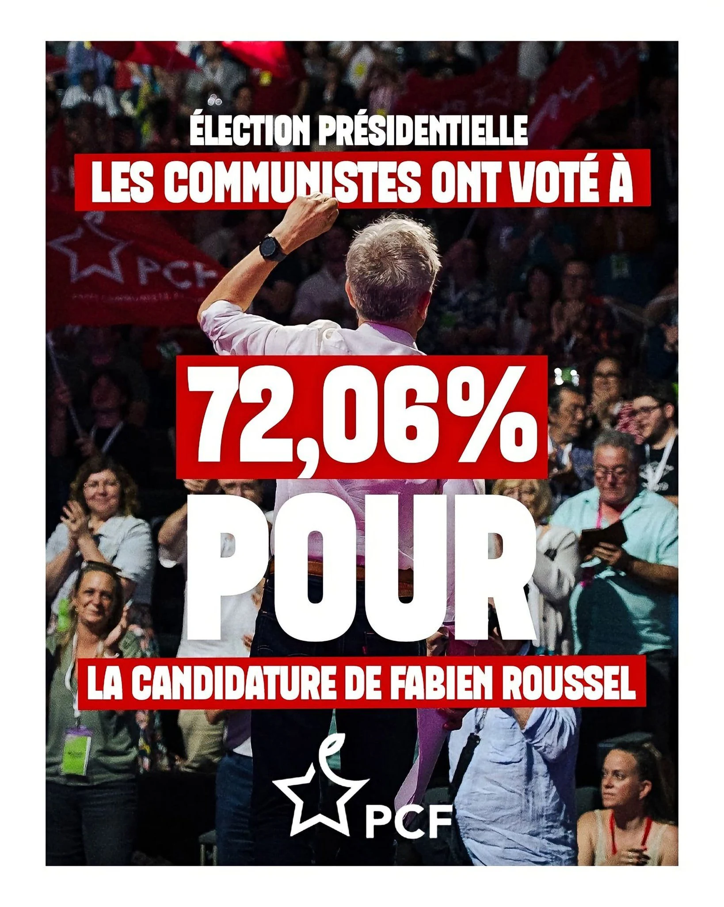

Publication du PCF 79
« 2027 : les communistes ont fait leur choix ! »
Date indiquée par Facebook · 6 septembre 2026
Texte conservé avec la publication
🚩 2027 : les communistes ont fait leur choix !
À l’issue d’un grand week-end de démocratie militante et après des mois de débats, 72 % des communistes se sont prononcés pour la candidature de Fabien Roussel à l’élection présidentielle de 2027.
🤝 Pour répondre aux attentes du monde du travail et faire gagner la gauche tous les communistes sont maintenant invités à s’engager et à participer à cette campagne.
En avant pour 2027 !
Repères éditoriaux
La publication du 6 septembre annonce le choix de Fabien Roussel pour la présidentielle de 2027. Elle présente le résultat du vote et appelle les communistes à s’engager dans la campagne.

Sources
Archive rouge · export Facebook · AR-0002-FB-00697
À lire aussi · Face au budget d’austérité, le PCF propose un pacte d’avenir